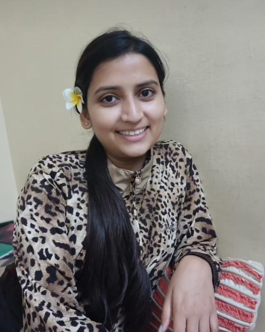

Hi, My name is
Anjali Raja
and I am a

Work Experiance
ATM Simulator System
This project handles functionalities like
Opening Banking account, Withdrawl, Deposit, MiniStatement, Pin Change.
Technologies used: Core Java
(Swing, AWT, Exceptional Handling,
OOPS, Abstract classes, Interfaces).
Chatting Application
Made a Bank Management project in which i
handled cash withdraw , cash deposit , mini statement etc,
with the help of java , java swing , mysql ,java awt.
Technologies used: Core Java
(Swing, AWT, Socket Programming).
Counselling Website
Made a Bank Management project in which i
handled cash withdraw , cash deposit , mini statement etc,
with the help of java , java swing , mysql ,java awt.
Technologies used: HTML, CSS, Javascript.
Password Encrypted Door Lock Security System
This project is a classic snake game which
i made using java(Swing, and AWT).In this project i have handled
user input , snake movement, and incorporate collision detection of snake.